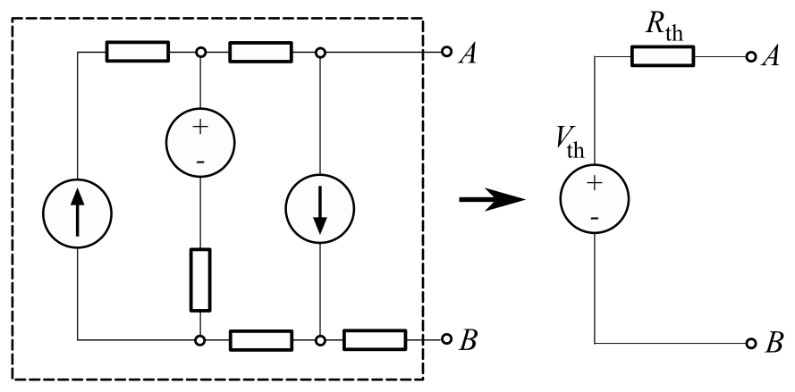

What is a Thevenin Equivalent Circuit, and why do we need to know it?

How do we solve for the Thevenin Equivalent?
When you first look at a Thevenin problem, classify the circuit as one of the following:

Case 1: All-Independent Sources
As for your R_th, you can find it by:
- Deactivating your sources (opening current sources, shorting voltage sources)
- Finding the equivalent resistance (now that there are only resistors in your circuit), with respect to the same terminals
Case 2: All-Dependent Sources
Note: the polarity of test voltage sources must match V_oc, and test current sources must flow from the negative terminal to the positive terminal (orientation matters, so be careful).
Then, find both the voltage and current across that test source, and use $\frac{V}{I}$ to find R_th.
We can do this because the circuit contained only dependent sources. It would not have produced any response unless there were other responses caused by an independent source.
Case 3: A Mix of Dependent & Independent Sources
Example Question
-
This is the block of text that appears when the button is clicked.
- Item 2
- Item 3
Practice Problems
Problem 1 (Easy)
What is the voltage in R2?